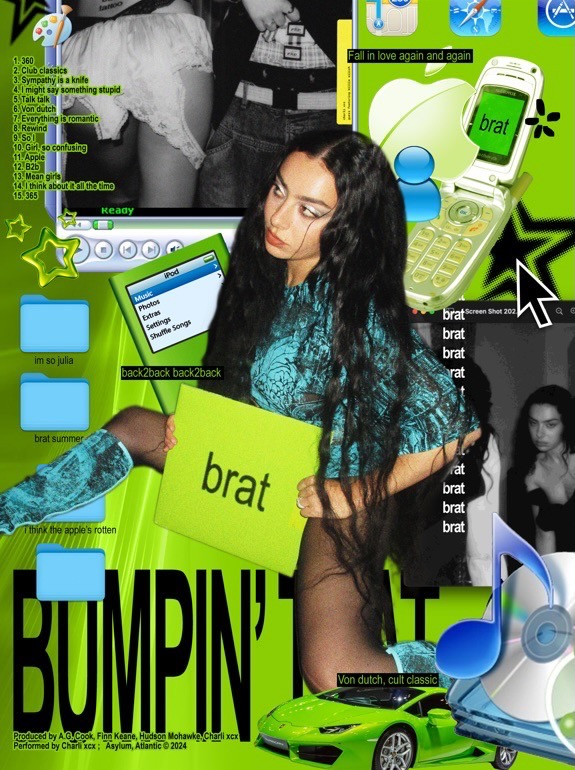

I'm Sandakuu Mae, and this is my portfolio site for visual art, web art, and graphic design. I am a future 2026 high school graduate and based in Yangon, Myanmar. Inquiries are available sthrough my contacts:
- LinkedIn: Sandakuu Mae
- Gmail: sandakuu29@gmail.com
- GitHub: @jam-over-jelly
Featured
VIEW ALL

Blog
This is where I occasionally write articles on topics I find interesting, especially media that stands out to me. I write commentaries on movies, TV shows, artworks, but most commonly on music (album/single reviews, anticipated future releases, discography discussions, etc.)